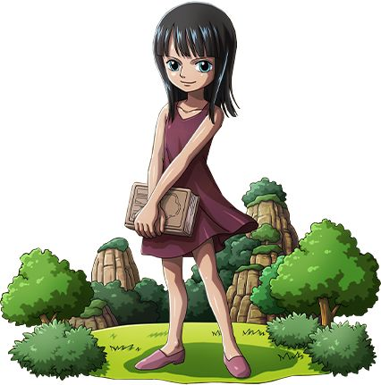
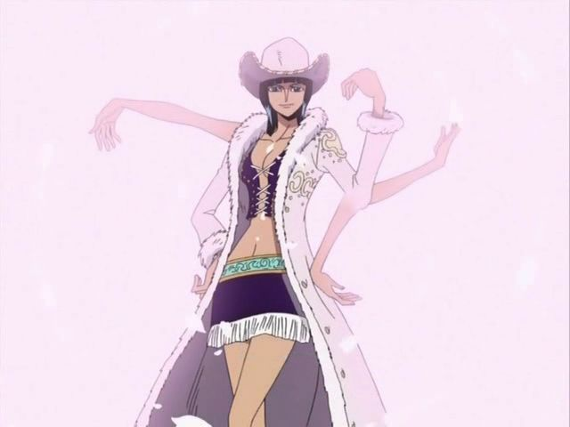
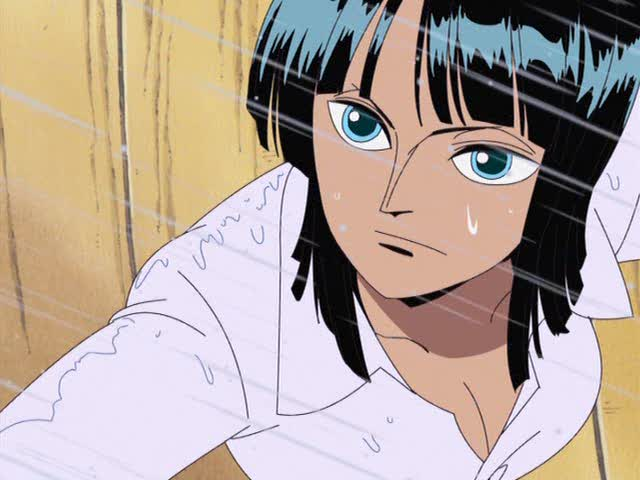
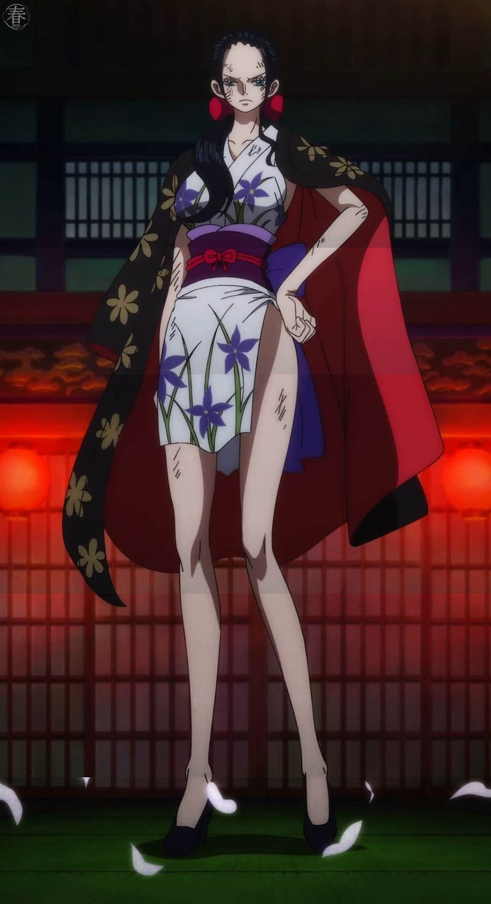

Etapas de Nico Robin en One Piecce
🔹 Fase 1 — Infancia en Ohara / Orígenes traumáticos

- Robin nació en Ohara, una isla famosa por su gran historia arqueológica. Ya desde niña mostró interés y talento en la arqueología.
- A muy corta edad aprendió a leer los textos antiguos llamados Poneglyphs — piedras que contienen la historia olvidada del mundo. Eso la marcó como alguien peligroso para el gobierno mundial.
- Cuando su isla fue destruida por un “Buster Call” ordenado por el gobierno, y casi toda su gente —incluyendo su familia adoptiva— murió, ella quedó como la única sobreviviente.
- A raíz de eso, vive en fuga, perseguida, con una recompensa por su cabeza — marcada como “criminal” solo por saber la historia verdadera.
🔹 Fase 2 — Vida como fugitiva / miembro de Baroque Works, antagonista inicial

- Tras sobrevivir a la destrucción de Ohara, Robin termina asociándose con Baroque Works bajo el alias “Miss All Sunday”. Por un tiempo actúa como antagonista, aliada de villanos, usando sus habilidades y su conocimiento histórico.
- Durante esta etapa, su falta de confianza y su cinismo se acentúan: ha aprendido a sobrevivir, a no confiar en nadie, a ocultar su pasado. Su vida es de engaño, huida, manipulación cuando es necesario.
- Su poder derivado de la fruta del diablo Hana Hana no Mi (que le permite hacer brotar partes de su cuerpo) — ya lo domina parcialmente, lo que la convierte en una amenaza.
🔹 Fase 3 — Integración a Straw Hat Pirates / Revelación del pasado & búsqueda de redención

- Hacia el final del arco de Alabasta Arc, Robin decide unirse a los Straw Hat — lo que marca un giro radical: de fugitiva/antagonista a aliada, con un nuevo propósito.
- Pero no todo es simple: en el arco Water 7 Arc — debido al peligro que representa — Robin abandona temporalmente la tripulación, decidida a alejar a sus amigos del riesgo que conlleva estar con ella.
- Tras los sucesos del arco Enies Lobby Arc, sus amigos arriesgan todo por salvarla — y Robin finalmente dice la icónica frase “Quiero vivir”, aceptando su lugar, su pasado, su futuro junto a ellos.
🔹 Fase 4 — Post-timeskip / Arqueóloga, combativa, curación emocional y reafirmación de ideales

- Tras el salto temporal, Robin se estabiliza como la arqueóloga oficial de los Straw Hat. Su conocimiento de los Poneglyphs, su inteligencia, su experiencia la consolidan como pieza clave en la tripulación.
- Su personalidad — aun manteniendo su madurez, su reserva y su prudencia — gana seguridad, confianza, y acepta su papel dentro del grupo y en la historia del mundo.
- Su objetivo principal sigue siendo: descubrir la verdad del mundo, revelar la historia olvidada, encontrar los Poneglyphs importantes y contribuir al sueño del grupo. Eso le da propósito, esperanza y motivación.